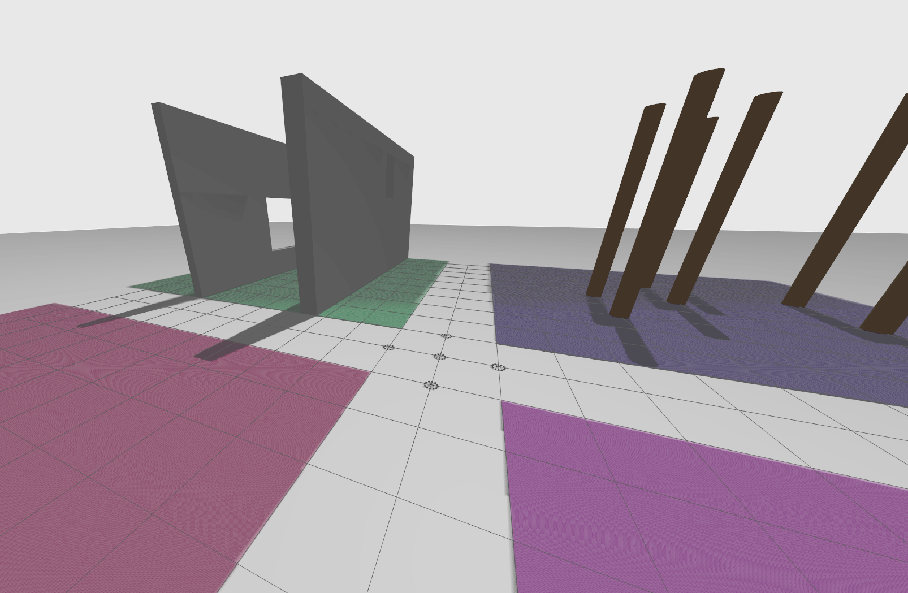
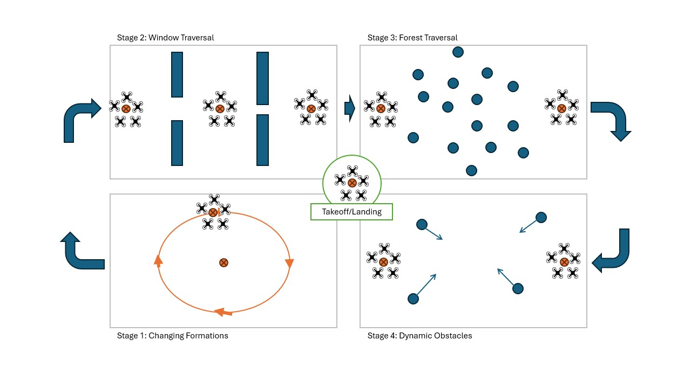

12. CW2: Swarming and Multi-Drone Formation Flight Challenge¶
Groups of 3 Project

12.1 Challenge¶
This challenge revolves around swarming of drones and formation flight. We are asking you to investigate the difference in performance and application of decentralised swarm based approaches versus centralised approaches to performing formation flight with a group of 5 drones in a number of different scenarios.
12.1.1 Swarming and Formation Flight¶
Swarming refers to the collective behavior of multiple agents (drones) operating together using local rules without a centralized controller. These behaviors emerge from interactions between individual drones and their environment.
Swarm robotics takes inspiration from nature—such as birds, fish, and insects—to design scalable, flexible, and robust robotic systems. Swarm behaviors are often decentralized and self-organized, meaning that individual drones follow simple local rules that collectively result in a global pattern of behavior.
Common decentralized swarm control strategies:
- Boids Model (Flocking Behavior) – Uses three simple rules: separation, alignment, and cohesion.
- Potential Fields – Assigns virtual attractive/repulsive forces to goals and obstacles to guide movement.
- Reinforcement Learning-Based Swarms – Uses machine learning to optimize local decision-making.
- Bio-Inspired Methods – Such as pheromone-based navigation or genetic algorithms.
Formation flight is a more structured approach to multi-agent coordination where drones maintain a specific geometric arrangement while moving. Unlike general swarming, formation flying often requires precise positioning and coordination.
Common formation flight strategies:
- Centralized Approaches
- Leader-Follower – One drone acts as the leader while others maintain a relative position.
- Multi-Agent Path Planning (MAPF) – Centralized planning optimizes collision-free paths.
- Virtual Structures – The entire formation is treated as a rigid body and controlled as one unit.
- Decentralized Approaches
- Boids with Formation Constraints – Similar to flocking but with additional formation control.
- Consensus-Based Control – Drones agree on formation changes based on local communication.
- Distributed Potential Fields – Drones use attraction/repulsion forces while maintaining formation.
Swarming and formation flight have numerous real-world applications across various industries.
- In aerial surveillance and search-and-rescue, swarming drones can quickly cover large areas, scan for missing persons, or assess disaster zones without relying on a single point of failure.
- In logistics and delivery, drone swarms can efficiently transport packages in coordinated formations, optimizing airspace usage and reducing delivery times.
- In environmental monitoring, swarms of drones can track wildlife migrations, detect deforestation, or monitor air and water quality over vast regions.
- In entertainment and art, synchronized drone light shows use precise formation flight to create complex aerial displays, offering an innovative alternative to fireworks.
These examples highlight the versatility of swarm robotics in enhancing efficiency, scalability, and adaptability in real-world operations.
12.1.2 Your Challenge¶
We have created a competition style course with 4 different stages to complete one after another.
-
Stage 1: Changing Formations:
- Implementing the formation flight algorithms which have the ability to changing the formation periodically whilst maintaining a circular trajectory.
- Cmpare different formation shapes (Line, V-shape, Diamond, Circular Orbit, Grid, Staggered)
-
Stage 2: Window Traversal:
- Using your formation flying methods attempt to maneouever your swarm of drones through two narrow windows slits.
- Consider how to split, rejoin, or compress the formation to pass through gaps.
-
Stage 3: Forest Traversal:
- Using your formation flying methods attempt to maneouever your swarm of drones through a forest of trees.
- Your swarm should avoid collisions and maintain efficiency in movement.
-
Stage 4: Dynamic Obstacles:
- Using your formation flying methods attempt to maneouever your swarm of drones through a set of dynamically moving obstacles.
- You may need adaptive formation control to respond to changes in real time.

You will be investigating, developing and testing your algorithm primarily in simulation. Hopefully we will get a chance to run these on the real crazyflies. Points are awarded on the completion of each stage, and performance within. The winning group will be the group with the most points at the end of the competition.
12.2 Challenge Environemnt¶
Just as with the previous courseworks and gazebo aruco challenges, this will also be within aerostack2 and ros2. At this point you should feel more familiar with the systems and how they all work. To enable this challenge, we have created a new repository specifically for this challenge.
The repository is here: challenge_multi_drone
12.2.1 Installation¶
As before, follow the [README.md] in the challenge repository for installation instructions.
NOTE that we have made a patch for aerostack2 and the crazyflie interface and you will therefore have to pull our versions of these two libraries and build them from source yourself.
12.2.2 Running the environment¶
The README.md goes into full details of each command.
Many things are the same as your previous courseworks. However a key difference is that we are now running multiple drones. As you can imagine this is much more taxing on your machines, and some approaches to running this coursework may no longer be appropriate.
Like previous you will need two terminals, both in the root of the repository:
In terminal 1 run the following to launch the drone simulation of scenario1, and you will see gazebo popup.
./launch_as2.bash -s scenarios/scenario1.yaml
And in a second terminal, you can run the ground station, which will spin up the visualisation software rviz2 as well as provide a prompt for you to run your mission (Though you can run your python mission from everywhere, provided you source /<your workspace>/install/setup.bash first)
./launch_ground_station.bash
# or if you want to play around with teleoperating the drone
./launch_ground_station.bash -t
Remember: If you want to close the simulation down, just run the
stop.bashscript from the repository root in any terminal or tmux window.
12.2.3 Bulding your solution¶
We have released a scenario1.yaml which describes a sample environment which contains the 4 stages mentioned within this challenge.
Have a read of the scenarios file to see some of the parameters you will need to manage.
TODO: More scenarios will be released shortly for testing.
12.3 Recommended Tasks¶
To be released
12.4 Coursework Submission¶
To be released
12.5 Assessment Breakdown and Structure¶
To be released